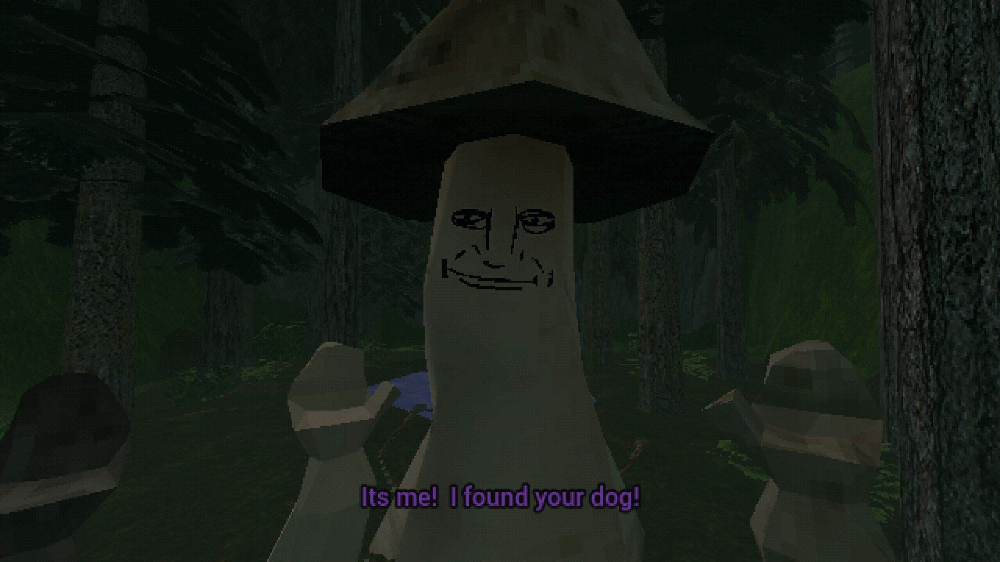

01
Feed the Mushroom
Short PS1-style horror adventure
You receive a mysterious call from someone who has found your loyal dog Buddy. After getting to the forest, it seems the “someone” was a something: a mushroom. It wants three items.
“Chop, chop buster” — Mushroom